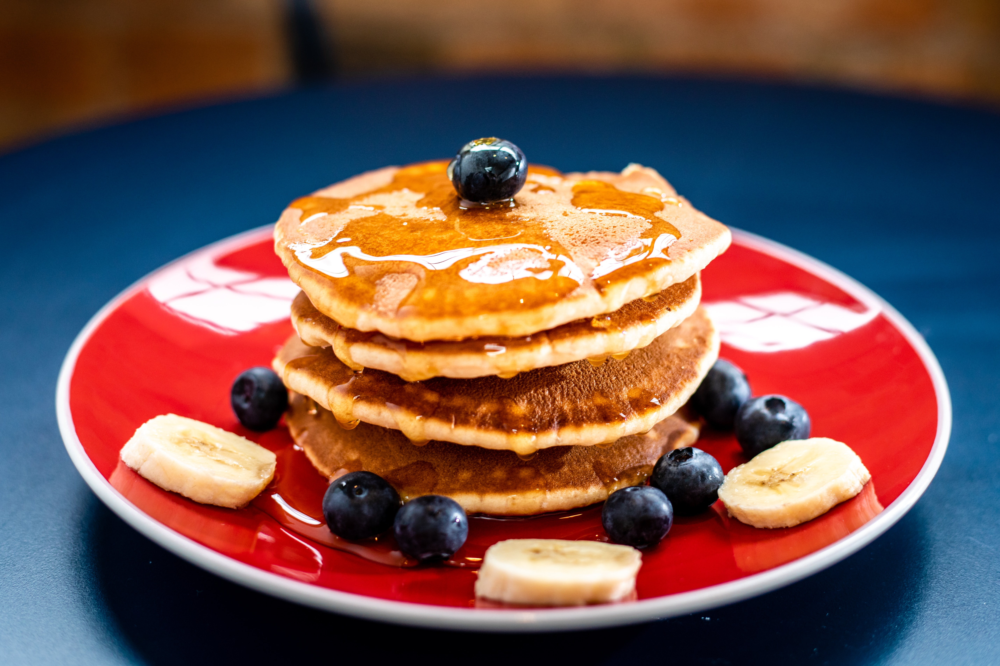

Pancake
back to home

Description
a thin, flat cake of batter, fried on both sides in a
pan and typically rolled up with a sweet or savoury filling.
Ingredients
- Egg
- Flour
- Milk
- Butter
- Baking powder
- Sugar
Steps
- Grab a griddle or large nonstick skillet.
- Preheat and lightly grease your pan
- Use a simple ratio to make batter.
- Don't overbeat the batter.
- Cook each pancake until bubbles form on top.
- Add toppings before you flip.
- Flip and let cook for another minute.